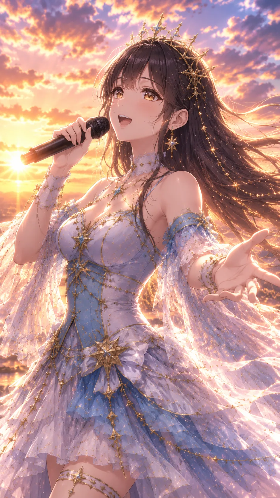
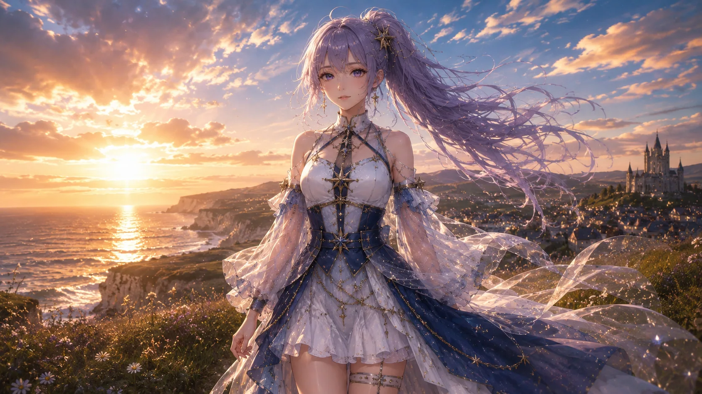
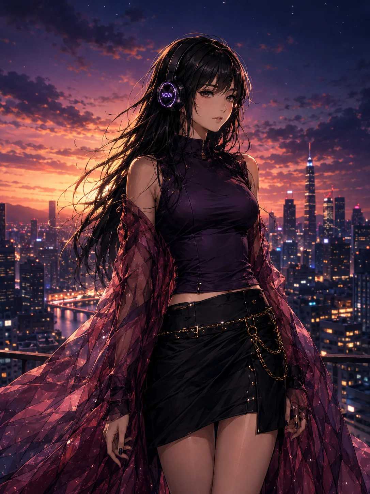
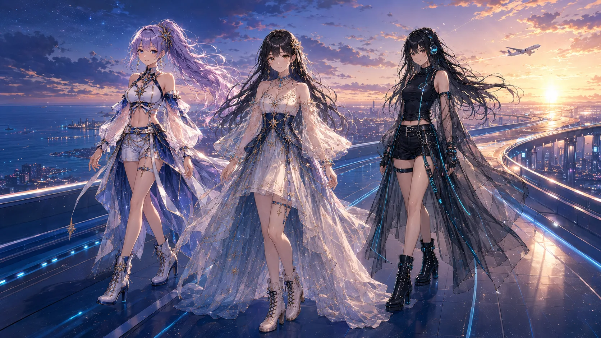
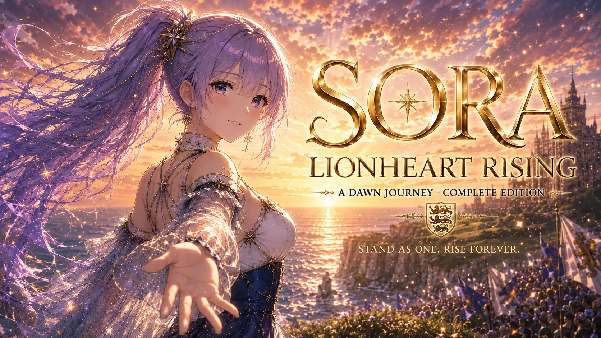

AIRI
日本語ボーカル中心
Japanese vocal-centered songs
Cinematic Electronic Music from Japan
zunaari musicは、音楽・キャラクター・世界各地の都市や風景を組み合わせた 映像作品をYouTubeを中心に制作しています。
zunaari music creates cinematic music videos that combine original songs, characters, and cities and landscapes from around the world, centered on YouTube.

日本語ボーカル中心
Japanese vocal-centered songs

英語ボーカル
English vocal songs

インストゥルメンタル／都市・旅をテーマにした作品
Instrumental works themed around cities and travel

Road to World Cup 2026
世界各地の都市や風景を舞台に、2026年へ向かう音楽の旅を描くシリーズ。
A cinematic music journey across cities and landscapes around the world, moving toward 2026.

English Vocal Trance ・ United Kingdom
英国の風景を舞台に、希望、団結、立ち上がる力を描いた壮大なEnglish Vocal Trance。
An epic English vocal trance journey through the landscapes of the United Kingdom, celebrating hope, unity, and the courage to rise.
YouTubeで見る / Watch on YouTube
Social / SNS